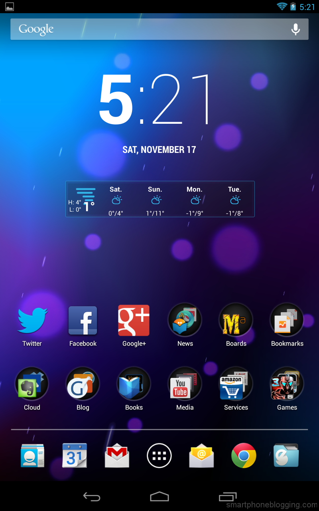

| Página inicial |
| Android 4.0 Ice Cream Sandwich |
| Android 4.1 Jelly Bean |
| Android 4.2 Jelly Bean Plus |
| Android 4.3 Jelly Bean |
| Android 4.4 Kit Kat |
| Android 5.0 Lollipop |
Ainda mais rápido do que as versões mais antigas. Para quem gosta de ter um celular eficiente para tirar fotos, o Android 4.2 oferece o recurso Photo Sphere, capaz de tirar fotos panorâmicas em 360º. Mais um destaque que você pode ter em celulares com Android Jelly Bean Plus fica por conta da digitação por gestos: esse recurso ainda sugere as palavras, facilitando quem curte mandar diversas mensagens no dia a dia.
